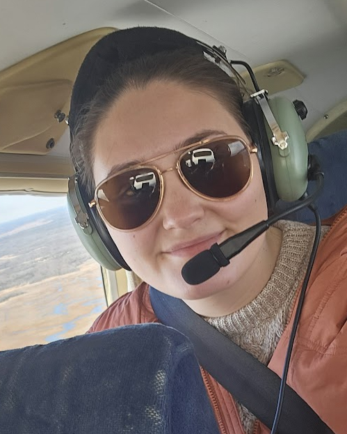

Professional Focus
Provide evidence-based nursing care with empathy, strong critical thinking, and clear communication. Provide education and training to new nurses in the ED, through support and supervision during the onboarding process.
BSN Nursing Portfolio
Welcome

Welcome to my professional nursing portfolio. My Name is Meagan Zimberg; I am a recent graduate of William Paterson University with a Bachelor of Science in Nursing. I am a dedicated and passionate emergency department nurse, currently working at Cooperman Barnabas Medical Center.
Throughout my academic journey, I have gained further knowledge regarding nursing leadership and management. This portfolio highlights my qualifications, clinical education, work experience, professional goals, and readiness to deliver safe, compassionate care.
Provide evidence-based nursing care with empathy, strong critical thinking, and clear communication. Provide education and training to new nurses in the ED, through support and supervision during the onboarding process.
BSN graduate with clinical experience in medical-surgical, cardiovascular open heart, NICU, Labor and delivery, and inpatient psychiatric settings.
I am currently studying for my CEN exam and will be taking my ENPC class in June 2026. I hope to join a collaborative healthcare team where I can continue learning and support positive patient outcomes.